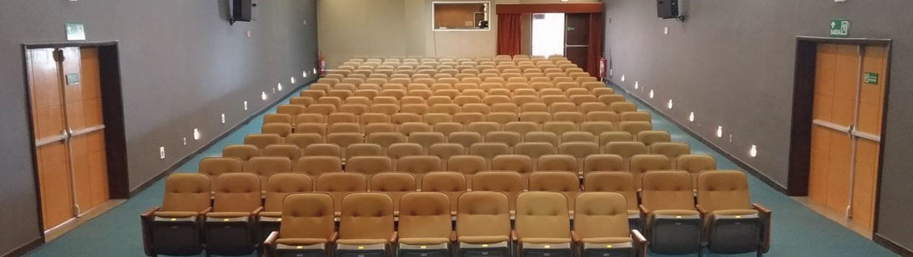

Teatro SESI Campos
O Teatro SESI Campos recebe espetáculos de renome nacional e shows de artistas nacionais e locais, com uma programação que oferece preços acessíveis ao grande público. Através do projeto mensal SESI Cultural, o espaço leva números de dança, shows e espetáculos de temas variados para os campistas. O espaço é administrado pela Firjan SESI, que mantém uma rede de teatros e espaços em suas unidades do Rio, com o objetivo de estimular a produção cultural e facilitar o acesso da população a espetáculos e eventos.
- Palco: Caixa cênica italiana, com piso em quarteladas de madeira, lagura: 8,83 (parede a parede), sendo que 6,50 metros de um regulador ao outro. Profundidade: 7,50 metros. Altura: 3,10 metros até a vara de luz;
- Plateia: lotação - 200 lugares (4 espaços para cadeiras de rodas);
- Proscênio: fixo semicircular ao longo da caixa cênica. Largura: 6 metros. Profundidade: 2,10 metros, ao centro da boca de cena;
- Boca de cena: tipo italiano. Altura: 2,76 metros. Largura: 6 metros;
- Camarins coletivos - 02 unidades: banheiros c/ box privativo para chuveiro elétrico e sanitário. Bancada fixa c/ espelho, lâmpadas e bancos para maquiagem. Tomadas 127 Volts.
- Vestimentas cênicas: cortina de boca de cena, acionada manualmente. Rotunda, tapadeiras, bambolinas, por ajustes manuais;
-
Equipamento de Vídeo:
- 01 dvd player
- 01 “TV 32” instalada no Foyer
- 01 Projetor BENQ de 6000 lumens
- 01 Tela de projeção (4x3) por acionamento elétrico, a frente da cortina 50 polegadas - O sistema de vídeo projeção é analógico, ou seja, suas conexões são do tipo VGA/RCA.; - Material de palco e instrumentos: verificar a disponibilidade com a administração do teatro;
-
Equipamentos de áudio:
- 01 Console de áudio digital Yamaha CL5 com 48 canais no palco + 14 na cabine
- 01 CD player duplo Numark MP302
- 05 Microfones s/fio “head/set” Audiotechnica System10
- 02 Microfones s/fio bastão Sennheiser mod. EW100 G3
- 04 Microfones s/fio bastão Shure mod. SM58 PGX
- 07 Microfones Shure mod. SM58
- 02 Microfones Shure mod. BETA 58a
- 03 Microfones AKG mod. D112
- 03 Microfones AKG mod. C414xL
- 04 Direct box passivas Behringer
- 02 Direct box ativo
- 15 Pedestais girafa
- 05 Pedestais girafa pequenos
- 03 Pedestais de mesa ASK
- 01 Sistema de side passivo com staner TD 210
- 02 Monitores de solo ativos Attack mod MP 404 TI
- 04 Monitores de solo ativos Selenium mod SPM 1202A
- 01 PA composto de 2 caixas ativas mod. SPM1202A de cada lado como altas e 2 sub staner mod PSW 212
- 01 Delay com 1 caixa ativa de cada lado mod Attack MP 404 TI
- 01 amplificador de fones Behringer Power Play Pro 8 com conexões P10
- 08 fones de ouvido Koss Porta Pro com conexções XLR.
Equipamentos de Áudio normatizados no padrão - (A.B.N.T.), tomadas, bases p/ tomadas, prolongas e paralelos em (Plug/tripolar 2 P+T- PIAL) -
Equipamentos de iluminação cênica:
- 01 Fog machine FQ100 dmx, High End
- 01 Controladora ION/ETC com 01 Subwing de 40 fader’s
- 01 Controladora Smartfade 12/48
- 02 Módulos de dimmer Star de 12ch/4KW – total de 24 canais
- 12 Refletores do tipo PC/Telem de 1KW
- 10 Refletores do tipo Fresnel/Telem de 1KW
- 02 Refletores do tipo Lâmpada PAR#2-1KW/220v
- 02 Refletores do tipo Lâmpada PAR#2-1KW/220v
- 04 Refletores do tipo Set Light-1KW/220v
- 12 Refletores do tipo Lâmpada PAR#5-1KW/220v
- 01 Refletores do tipo Elipsoidal Source Four JR 575W / ETC 25-50°
- 04 Refletores do tipo Elipsoidal Telem OM 771-1KW
- 10 Refletores do tipo Source Four PAR ETC
- 68 Linhas/dimmer disponíveis com carga de 4KW cada
- 05 Hastes de Iluminação no Palco, com 12 linhas cada
- 01 Hastes Pontes de iluminação fixas, à frente do palco, com 16 linhas cada
- 02 Hastes verticais laterais fixas de Iluminação, entre Plateia e o proscênio, com 04 linhas em cada
Equipamentos de iluminação normatizados no padrão (A.B.N.T.), tomadas, bases p/ tomadas, prolongas e paralelos em (Plug/tripolar 2 P+T- PIAL).
- Caso queira usar a máquina de fumaça deverá adquirir o fluído da marca rosco.
Como levar meu espetáculo ou show?
O Teatro SESI Campos é gerido pelo Sistema FIRJAN, e funciona de acordo com o calendário da rede de teatros Firjan SESI, que lança editais anualmente e semestralmente, que são publicados pelo Diário Oficial da União e no portal Firjan SESI. A programação do teatro é disponibilizada no site Guia de Cultura da Firjan SESI. É possível entrar em contato diretamente com o teatro através do e-mail: teatrosesi.campos@firjan.com.br, ou pelos telefones: (22) 2101-9052, (22) 2101-9053, endereço: Av. Dep. Bartolomeu Lizandro, nº 862 - Jardim Carioca, Campos dos Goytacazes - RJ, 28080-390